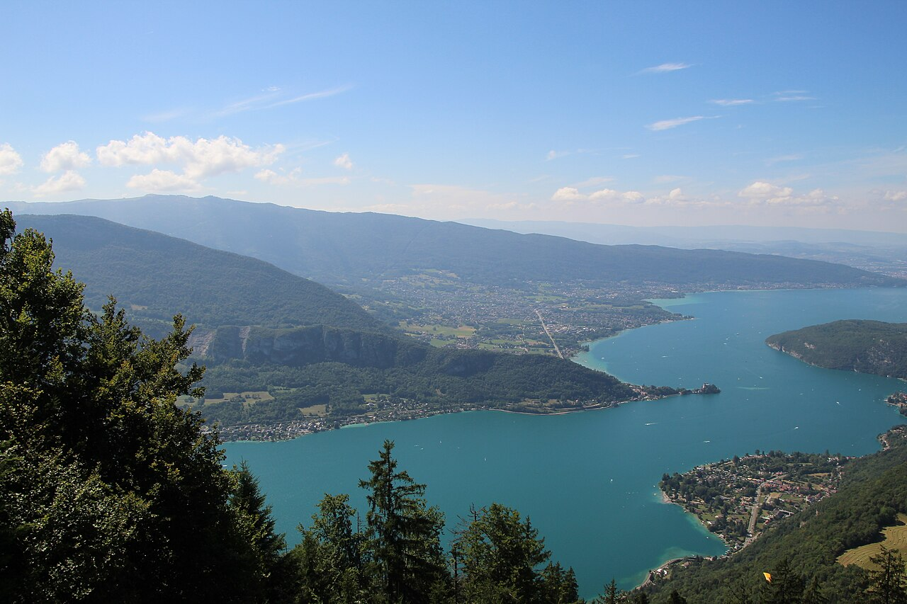
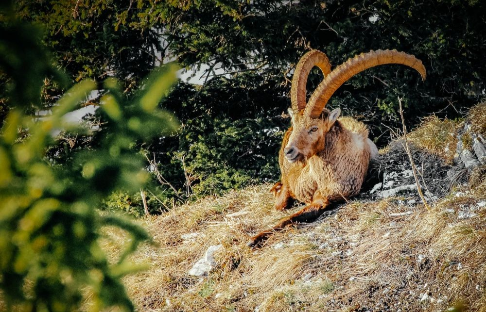

STAGE PHOTO
coucher de solei
30€ / pers
Durée : 2h à 2h30
Nous contacter
Après une promenade sur les crêtes, venez photographier le coucher de soleil. Si le ciel est dégagé, vous aurez peut-être la chance de voir le massif du Mont-Blanc.
Objectif : Maîtriser la prise de vue en basse lumière et composer avec les teintes du coucher de soleil
Matériel requis: appareil photo ou smartphone, trépied optionnel, vêtements chauds, chaussures de marche ou baskets
Lampes frontales fournies
Lampes frontales fournies

STAGE PHOTO
à la rencontre des bouquetins
40€ / pers
Durée : 1 journée
NOUS CONTACTER
-
A la jonction des massifs du Bargy et des Aravis, venez observer et photgraphier cet animal emblématique des Alpes.Objectif : Aprrendre à photographier la le bouquetin dans son milieu naturel en respObjectif : Aprrendre à photographier la le bouquetin dans son milieu naturel en respObjectif : Aprrendre à photographier la le bouquetin dans son milieu naturel en resp
STAGE PHOTO
les oiseaux du lac d'Annecy
35€ / pers
Durée : 1/2 journée
Nous contacter
Après une promenade sur les crêtes, venez photographier le coucher de soleil. Si le ciel est dégagé, vous aurez peut-être la chance de voir le massif du Mont-Blanc.
Après une promenade sur les crêtes, venez photographier le coucher de soleil. Si le ciel est dégagé, vous aurez peut-être la chance de voir le massif du Mont-Blanc.
Après une promenade sur les crêtes, venez photographier le coucher de soleil. Si le ciel est dégagé, vous aurez peut-être la chance de voir le massif du Mont-Blanc.